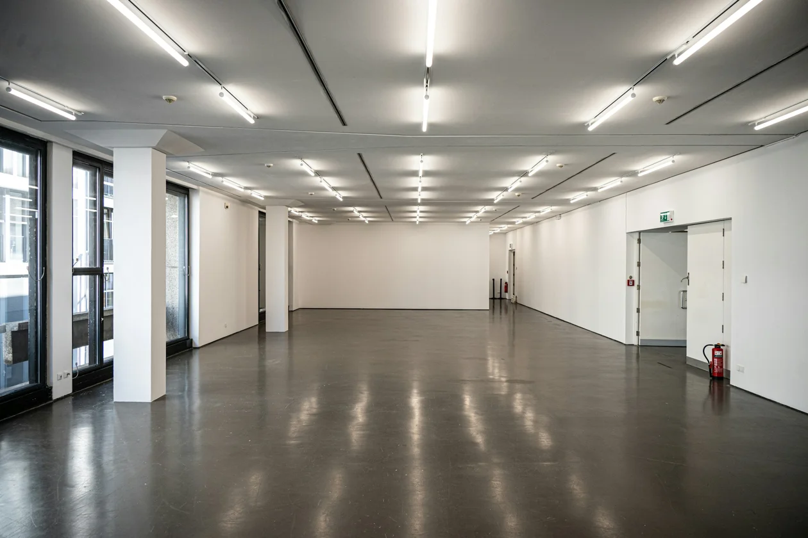
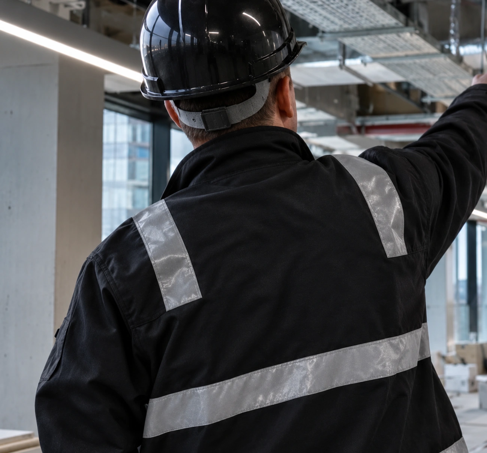

Design ambition means more when it is grounded in the building, the budget and the people who will use the space. BAMBU connects those conversations from the start.
Five connected phases. One accountable conversation.
Five stages and one coordinated team. See where people, design, cost and construction work together.
STAGE 01 / 05
UnderstandStart with your aspirations, people and a walk around the building.
PlanExplore options, budget, programme and the route to approvals.
DesignBring layouts, samples and technical details together.
DeliverCoordinate procurement, construction and quality on site.
SupportOpening day, ongoing advice and future adaptations.
People & briefDesign & decisionsCost & coordinationConstruction & handover
The interchange / Where the lines meet
Four connected disciplines. One coordinated plan.
A workplace is shaped by people, design, commercial decisions and the realities of construction. We consider those together, so one decision informs the next.
01 / PEOPLEPeople & brief
02 / DESIGNDesign & decisions
03 / COMMERCIALCost & coordination
04 / DELIVERYConstruction & handover
THE INTERCHANGE / 01
Clarity before commitment.
One joined-up picture of the brief, options, budget, approvals and the route to delivery.
The best moment to challenge an assumption is before a drawing, cost or completion date depends on it.

01 / COMMERCIAL LOGIC
Design to budget.
A budget is a design input, not just a figure added at the end. Separate essential works from optional enhancements, allow for building conditions and procurement lead times, and record assumptions so that value decisions remain transparent.
Read the lease and building requirements early. Approvals may involve drawings, specifications, method statements and technical reviews. Reflect the landlord's process and any separate statutory consents in the programme.
We set out dependencies, responsibilities and decisions clearly, so changes to scope, cost or programme can be considered before they become problems on site.

04 / ONE COORDINATED CONVERSATION
The right expertise, around your brief.
Design, technical coordination, fit-out and aftercare should reinforce one another. Explore where BAMBU can help.